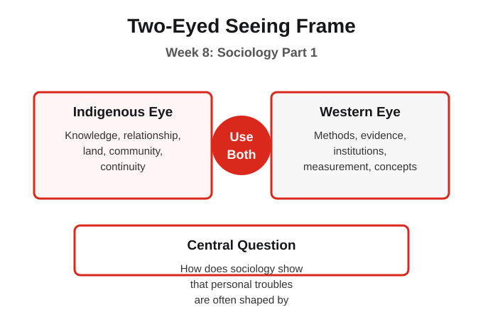
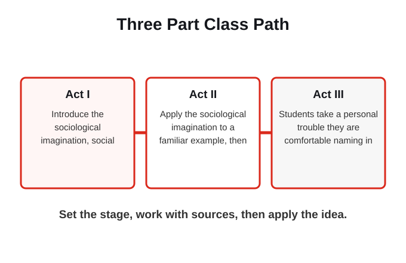
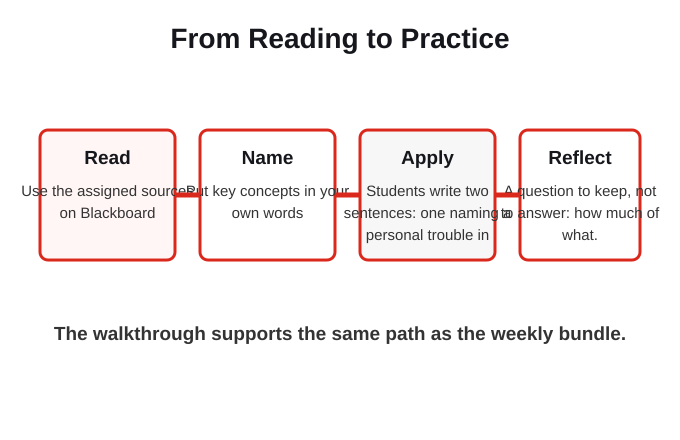

1. Which central question anchors this week?
2. Which topic is this walkthrough focused on?
3. Which reading or reading direction belongs to this week?
4. Which learning outcome is named for this week?
5. What practice task does the week ask you to do?
6. What should you know about assessment this week?
7. How does the Two-Eyed Seeing frame work in this week?
The purpose of this week is to connect social science theory to real social life while keeping both ways of knowing in view. The work stays grounded in course sources and uses everyday examples so the concepts can travel into citizenship, work, and further study.
By the end of this week you should be able to

This course moves from naming the social sciences and the Two-Eyed Seeing frame, through the foundation of Indigenous Canada and the methods of social research, into the disciplines themselves, and back to the personal map you draw and then revisit. This week introduces sociology and its core move: seeing the link between individual lives and the larger social structures that shape them.
The central question is: How does sociology show that personal troubles are often shaped by social structures?
How does sociology show that personal troubles are often shaped by social structures?

The Western sociological eye gives us structure, the sociological imagination, and the study of institutions. The Indigenous eye centers relationship, kinship, and responsibility as forms of social structure that Western sociology has often overlooked. Two-Eyed Seeing reads social structure as both system and relationship.
The frame works only when both ways of knowing remain visible and neither is treated as an add-on.
What does this week show about sociological imagination?

Act I (Historical Context, Setting the Stage): Introduce the sociological imagination, social structure, and the difference between personal troubles and public issues, using the OpenStax sociology text. Act II (Media, Primary Scene): Apply the sociological imagination to a familiar example, then ask how an Indigenous relational view would describe the same situation. Act III (Discussion, Application): Students take a personal trouble they are comfortable naming in general terms and trace it to a public issue. Personal Cartography 2 (mid-term) is due this week.
The week is built as a path: set the context, work with sources, then apply the idea in a bounded way.
Where does a Western disciplinary lens help, and where does it need an Indigenous lens beside it?
This week uses a short lecture frame, source guided reading, key concepts, guided notes, and one low stakes practice. The goal is to make the social science useful and to keep both eyes open, without turning the week into a personal disclosure task. The practice is: Students write two sentences: one naming a personal trouble in general terms, one naming the public issue behind it. The reflection question is: A question to keep, not to answer: how much of what feels like a personal failing is actually a structure you did not build?
The practice asks for careful application, not private disclosure. Use public, fictional, or general examples when that is the safer choice.
Whose knowledge is being treated as the default, and who decided that?
How does sociology show that personal troubles are often shaped by social structures?
The Western sociological eye gives us structure, the sociological imagination, and the study of institutions. The Indigenous eye centers relationship, kinship, and responsibility as forms of social structure that Western sociology has often overlooked.
The readings are named here for orientation, but the full texts stay on Blackboard or their approved access paths.
Write two sentences: one naming a personal trouble in general terms, one naming the public issue behind it.
This week builds from Knowledge Check Week and Cumulative Review and asks you to keep earlier ideas in view.
The focus is Sociology Part 1: How does sociology show that personal troubles are often shaped by social structures?
The next topic is Sociology Part 2, so save the concepts and questions that will travel forward.
The course keeps returning to the same disciplined move: use social science concepts while checking whose knowledge is being treated as the default.
A question to keep, not to answer: how much of what feels like a personal failing is actually a structure you did not build?
Your notes save automatically on this device and stay after you close your browser or shut down. Use Save my notes (below) to download a copy you can keep or open on another device.
After this walkthrough, which central question should you be able to answer more clearly?
What is the safest way to use Two-Eyed Seeing in this week?
Which topic should you connect to the week's readings and practice?
Which action should you complete after the walkthrough?
1What is the central argument or claim? Put it in one sentence.
2What evidence does the author use to support it?
3Which key concept or term carries the most weight, and how is it defined?
4What does the argument assume, and whose perspective might be missing?
5How does this reading connect to this week's topic and the other sources?
6Where do you agree, and where would you push back, and why?
7What is one question you still have after reading?
Use Blackboard for the full readings and the weekly Readings file for guidance. Do not rely on this walkthrough as a substitute for the texts.
Use the central question, the guiding questions, and the key terms to build notes in your own words.
Write two sentences: one naming a personal trouble in general terms, one naming the public issue behind it.
Personal Cartography 2 (mid-term) (13%) is due 11:59 PM Eastern on Friday, November 6, 2026. Late policy: late work receives a grade of zero, and all assignments are submitted through Blackboard. See the course outline.
Full readings and assignment submission stay on Blackboard.
OpenStax (2021). Socialization. OpenStax, Introduction to Sociology 3e (2021), Chapter 5.
Lawrence, B. (2003). Gender, Race, and the Regulation of Native Identity in Canada and the United States: An Overview. Hypatia, 18(2), 3-31.
The PDF is posted in this week's Readings folder on Blackboard (licensed for course use; do not redistribute).